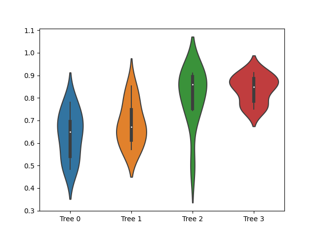

Note
Click here to download the full example code
Piecewise-Linear artificial example¶
This demo is reproducing the results from the "Artificial Dataset" in the M5
paper, named pw-linear in the M5' paper.
Import the necessary modules and libraries
import numpy as np
import pandas as pd
import seaborn as sns
from sklearn.model_selection import cross_val_score
from sklearn.tree import DecisionTreeRegressor, export_text
from m5py import M5Prime
Create a random dataset
rng = np.random.RandomState(1)
nb_samples = 200
X1 = rng.randint(0, 2, nb_samples) * 2 - 1
X2 = rng.randint(-1, 2, nb_samples)
X3 = rng.randint(-1, 2, nb_samples)
X4 = rng.randint(-1, 2, nb_samples)
X5 = rng.randint(-1, 2, nb_samples)
X6 = rng.randint(-1, 2, nb_samples)
X7 = rng.randint(-1, 2, nb_samples)
X8 = rng.randint(-1, 2, nb_samples)
X9 = rng.randint(-1, 2, nb_samples)
X10 = rng.randint(-1, 2, nb_samples)
feature_names = ["X%i" % i for i in range(1, 11)]
X = np.c_[X1, X2, X3, X4, X5, X6, X7, X8, X9, X10]
y = np.where(
X1 > 0,
3 + 3 * X2 + 2 * X3 + X4,
-3 + 3 * X5 + 2 * X6 + X7
) + rng.normal(loc=0., scale=2 ** 0.5, size=nb_samples)
Define regression models and evaluate them on 10-fold CV
regr_0 = DecisionTreeRegressor()
regr_0_label = "Tree 0"
regr_0_scores = cross_val_score(regr_0, X, y, cv=10)
regr_1 = M5Prime(use_smoothing=False, use_pruning=False)
regr_1_label = "Tree 1"
regr_1_scores = cross_val_score(regr_1, X, y, cv=10)
regr_2 = M5Prime(use_smoothing=False)
regr_2_label = "Tree 2"
regr_2_scores = cross_val_score(regr_2, X, y, cv=10)
regr_3 = M5Prime(use_smoothing=True)
regr_3_label = "Tree 3"
regr_3_scores = cross_val_score(regr_3, X, y, cv=10)
scores = np.c_[regr_0_scores, regr_1_scores, regr_2_scores, regr_3_scores]
avgs = scores.mean(axis=0)
stds = scores.std(axis=0)
labels = [regr_0_label, regr_1_label, regr_2_label, regr_3_label]
scores_df = pd.DataFrame(data=scores, columns=labels)
sns.violinplot(data=scores_df)

Out:
<Axes: >
Fit the final models and print the trees:
regr_0.fit(X, y)
print("\n----- %s" % regr_0_label)
print(export_text(regr_0, feature_names=feature_names))
Out:
----- Tree 0
|--- X1 <= 0.00
| |--- X5 <= 0.50
| | |--- X5 <= -0.50
| | | |--- X6 <= -0.50
| | | | |--- X10 <= 0.50
| | | | | |--- X3 <= -0.50
| | | | | | |--- value: [-6.94]
| | | | | |--- X3 > -0.50
| | | | | | |--- X8 <= -0.50
| | | | | | | |--- X3 <= 0.50
| | | | | | | | |--- value: [-8.87]
| | | | | | | |--- X3 > 0.50
| | | | | | | | |--- value: [-7.92]
| | | | | | |--- X8 > -0.50
| | | | | | | |--- X3 <= 0.50
| | | | | | | | |--- value: [-9.13]
| | | | | | | |--- X3 > 0.50
| | | | | | | | |--- value: [-9.59]
| | | | |--- X10 > 0.50
| | | | | |--- X2 <= -0.50
| | | | | | |--- value: [-5.39]
| | | | | |--- X2 > -0.50
| | | | | | |--- X8 <= 0.50
| | | | | | | |--- value: [-7.36]
| | | | | | |--- X8 > 0.50
| | | | | | | |--- value: [-8.00]
| | | |--- X6 > -0.50
| | | | |--- X8 <= 0.50
| | | | | |--- X3 <= -0.50
| | | | | | |--- X7 <= 0.50
| | | | | | | |--- X9 <= -0.50
| | | | | | | | |--- value: [-7.81]
| | | | | | | |--- X9 > -0.50
| | | | | | | | |--- value: [-7.17]
| | | | | | |--- X7 > 0.50
| | | | | | | |--- value: [-5.61]
| | | | | |--- X3 > -0.50
| | | | | | |--- X3 <= 0.50
| | | | | | | |--- X8 <= -0.50
| | | | | | | | |--- X2 <= 0.00
| | | | | | | | | |--- value: [-2.67]
| | | | | | | | |--- X2 > 0.00
| | | | | | | | | |--- value: [-3.48]
| | | | | | | |--- X8 > -0.50
| | | | | | | | |--- X2 <= 0.00
| | | | | | | | | |--- value: [-6.46]
| | | | | | | | |--- X2 > 0.00
| | | | | | | | | |--- value: [-5.55]
| | | | | | |--- X3 > 0.50
| | | | | | | |--- X9 <= -0.50
| | | | | | | | |--- value: [-8.61]
| | | | | | | |--- X9 > -0.50
| | | | | | | | |--- X2 <= 0.50
| | | | | | | | | |--- X4 <= 0.50
| | | | | | | | | | |--- value: [-5.95]
| | | | | | | | | |--- X4 > 0.50
| | | | | | | | | | |--- value: [-5.63]
| | | | | | | | |--- X2 > 0.50
| | | | | | | | | |--- value: [-3.63]
| | | | |--- X8 > 0.50
| | | | | |--- X6 <= 0.50
| | | | | | |--- X4 <= -0.50
| | | | | | | |--- value: [-2.59]
| | | | | | |--- X4 > -0.50
| | | | | | | |--- X9 <= 0.50
| | | | | | | | |--- X2 <= -0.50
| | | | | | | | | |--- value: [-5.84]
| | | | | | | | |--- X2 > -0.50
| | | | | | | | | |--- value: [-6.18]
| | | | | | | |--- X9 > 0.50
| | | | | | | | |--- value: [-4.31]
| | | | | |--- X6 > 0.50
| | | | | | |--- X3 <= -0.50
| | | | | | | |--- value: [-2.44]
| | | | | | |--- X3 > -0.50
| | | | | | | |--- value: [-3.46]
| | |--- X5 > -0.50
| | | |--- X6 <= -0.50
| | | | |--- X7 <= -0.50
| | | | | |--- X3 <= -0.50
| | | | | | |--- X8 <= 0.00
| | | | | | | |--- value: [-2.99]
| | | | | | |--- X8 > 0.00
| | | | | | | |--- value: [-4.53]
| | | | | |--- X3 > -0.50
| | | | | | |--- X4 <= -0.50
| | | | | | | |--- value: [-3.96]
| | | | | | |--- X4 > -0.50
| | | | | | | |--- X2 <= 0.00
| | | | | | | | |--- X9 <= 0.50
| | | | | | | | | |--- value: [-7.90]
| | | | | | | | |--- X9 > 0.50
| | | | | | | | | |--- value: [-8.57]
| | | | | | | |--- X2 > 0.00
| | | | | | | | |--- X10 <= 0.50
| | | | | | | | | |--- value: [-6.61]
| | | | | | | | |--- X10 > 0.50
| | | | | | | | | |--- value: [-7.82]
| | | | |--- X7 > -0.50
| | | | | |--- X4 <= 0.50
| | | | | | |--- X9 <= 0.50
| | | | | | | |--- X2 <= -0.50
| | | | | | | | |--- value: [-3.61]
| | | | | | | |--- X2 > -0.50
| | | | | | | | |--- X9 <= -0.50
| | | | | | | | | |--- value: [-3.20]
| | | | | | | | |--- X9 > -0.50
| | | | | | | | | |--- value: [-3.05]
| | | | | | |--- X9 > 0.50
| | | | | | | |--- value: [-1.59]
| | | | | |--- X4 > 0.50
| | | | | | |--- X3 <= 0.50
| | | | | | | |--- value: [-6.19]
| | | | | | |--- X3 > 0.50
| | | | | | | |--- X10 <= 0.00
| | | | | | | | |--- X9 <= 0.50
| | | | | | | | | |--- value: [-4.81]
| | | | | | | | |--- X9 > 0.50
| | | | | | | | | |--- value: [-5.21]
| | | | | | | |--- X10 > 0.00
| | | | | | | | |--- X8 <= 0.00
| | | | | | | | | |--- value: [-4.25]
| | | | | | | | |--- X8 > 0.00
| | | | | | | | | |--- value: [-3.97]
| | | |--- X6 > -0.50
| | | | |--- X7 <= -0.50
| | | | | |--- X4 <= 0.50
| | | | | | |--- X3 <= 0.00
| | | | | | | |--- X9 <= 0.00
| | | | | | | | |--- value: [-5.43]
| | | | | | | |--- X9 > 0.00
| | | | | | | | |--- value: [-4.97]
| | | | | | |--- X3 > 0.00
| | | | | | | |--- X10 <= 0.50
| | | | | | | | |--- value: [-3.94]
| | | | | | | |--- X10 > 0.50
| | | | | | | | |--- value: [-4.85]
| | | | | |--- X4 > 0.50
| | | | | | |--- X2 <= -0.50
| | | | | | | |--- value: [-0.46]
| | | | | | |--- X2 > -0.50
| | | | | | | |--- X10 <= 0.50
| | | | | | | | |--- X3 <= 0.50
| | | | | | | | | |--- value: [-4.10]
| | | | | | | | |--- X3 > 0.50
| | | | | | | | | |--- value: [-3.88]
| | | | | | | |--- X10 > 0.50
| | | | | | | | |--- value: [-0.94]
| | | | |--- X7 > -0.50
| | | | | |--- X6 <= 0.50
| | | | | | |--- X9 <= -0.50
| | | | | | | |--- X3 <= -0.50
| | | | | | | | |--- value: [-0.26]
| | | | | | | |--- X3 > -0.50
| | | | | | | | |--- value: [0.13]
| | | | | | |--- X9 > -0.50
| | | | | | | |--- X7 <= 0.50
| | | | | | | | |--- X10 <= -0.50
| | | | | | | | | |--- value: [-3.90]
| | | | | | | | |--- X10 > -0.50
| | | | | | | | | |--- value: [-3.39]
| | | | | | | |--- X7 > 0.50
| | | | | | | | |--- X8 <= 0.00
| | | | | | | | | |--- value: [-2.11]
| | | | | | | | |--- X8 > 0.00
| | | | | | | | | |--- value: [-2.02]
| | | | | |--- X6 > 0.50
| | | | | | |--- X4 <= 0.50
| | | | | | | |--- X8 <= 0.50
| | | | | | | | |--- X9 <= 0.50
| | | | | | | | | |--- X3 <= 0.00
| | | | | | | | | | |--- X2 <= 0.00
| | | | | | | | | | | |--- value: [-0.68]
| | | | | | | | | | |--- X2 > 0.00
| | | | | | | | | | | |--- value: [-0.18]
| | | | | | | | | |--- X3 > 0.00
| | | | | | | | | | |--- X10 <= -0.50
| | | | | | | | | | | |--- value: [-0.18]
| | | | | | | | | | |--- X10 > -0.50
| | | | | | | | | | | |--- value: [-0.13]
| | | | | | | | |--- X9 > 0.50
| | | | | | | | | |--- X7 <= 0.50
| | | | | | | | | | |--- value: [-1.24]
| | | | | | | | | |--- X7 > 0.50
| | | | | | | | | | |--- value: [-1.44]
| | | | | | | |--- X8 > 0.50
| | | | | | | | |--- value: [-1.80]
| | | | | | |--- X4 > 0.50
| | | | | | | |--- X8 <= 0.50
| | | | | | | | |--- X7 <= 0.50
| | | | | | | | | |--- value: [0.11]
| | | | | | | | |--- X7 > 0.50
| | | | | | | | | |--- value: [-0.60]
| | | | | | | |--- X8 > 0.50
| | | | | | | | |--- value: [1.57]
| |--- X5 > 0.50
| | |--- X6 <= 0.50
| | | |--- X9 <= -0.50
| | | | |--- X7 <= 0.50
| | | | | |--- X8 <= 0.00
| | | | | | |--- value: [0.67]
| | | | | |--- X8 > 0.00
| | | | | | |--- X4 <= 0.50
| | | | | | | |--- X4 <= -0.50
| | | | | | | | |--- value: [0.12]
| | | | | | | |--- X4 > -0.50
| | | | | | | | |--- value: [0.00]
| | | | | | |--- X4 > 0.50
| | | | | | | |--- value: [0.64]
| | | | |--- X7 > 0.50
| | | | | |--- value: [4.00]
| | | |--- X9 > -0.50
| | | | |--- X7 <= 0.50
| | | | | |--- X6 <= -0.50
| | | | | | |--- X8 <= 0.50
| | | | | | | |--- X10 <= 0.00
| | | | | | | | |--- value: [-3.15]
| | | | | | | |--- X10 > 0.00
| | | | | | | | |--- value: [-3.56]
| | | | | | |--- X8 > 0.50
| | | | | | | |--- value: [-1.53]
| | | | | |--- X6 > -0.50
| | | | | | |--- X4 <= 0.50
| | | | | | | |--- X3 <= 0.50
| | | | | | | | |--- X2 <= 0.50
| | | | | | | | | |--- X9 <= 0.50
| | | | | | | | | | |--- value: [-0.62]
| | | | | | | | | |--- X9 > 0.50
| | | | | | | | | | |--- value: [-0.86]
| | | | | | | | |--- X2 > 0.50
| | | | | | | | | |--- X9 <= 0.50
| | | | | | | | | | |--- value: [-1.34]
| | | | | | | | | |--- X9 > 0.50
| | | | | | | | | | |--- value: [-2.29]
| | | | | | | |--- X3 > 0.50
| | | | | | | | |--- value: [-3.43]
| | | | | | |--- X4 > 0.50
| | | | | | | |--- X7 <= -0.50
| | | | | | | | |--- value: [-0.09]
| | | | | | | |--- X7 > -0.50
| | | | | | | | |--- value: [-0.37]
| | | | |--- X7 > 0.50
| | | | | |--- X2 <= -0.50
| | | | | | |--- X8 <= 0.50
| | | | | | | |--- value: [-1.25]
| | | | | | |--- X8 > 0.50
| | | | | | | |--- value: [-2.06]
| | | | | |--- X2 > -0.50
| | | | | | |--- X8 <= 0.50
| | | | | | | |--- X4 <= 0.50
| | | | | | | | |--- X4 <= -0.50
| | | | | | | | | |--- X2 <= 0.50
| | | | | | | | | | |--- value: [-0.98]
| | | | | | | | | |--- X2 > 0.50
| | | | | | | | | | |--- value: [-0.64]
| | | | | | | | |--- X4 > -0.50
| | | | | | | | | |--- value: [-0.56]
| | | | | | | |--- X4 > 0.50
| | | | | | | | |--- value: [1.07]
| | | | | | |--- X8 > 0.50
| | | | | | | |--- X10 <= 0.00
| | | | | | | | |--- value: [1.24]
| | | | | | | |--- X10 > 0.00
| | | | | | | | |--- value: [1.25]
| | |--- X6 > 0.50
| | | |--- X8 <= -0.50
| | | | |--- X7 <= 0.50
| | | | | |--- X9 <= 0.00
| | | | | | |--- value: [-0.96]
| | | | | |--- X9 > 0.00
| | | | | | |--- value: [-1.58]
| | | | |--- X7 > 0.50
| | | | | |--- value: [4.23]
| | | |--- X8 > -0.50
| | | | |--- X9 <= -0.50
| | | | | |--- value: [0.38]
| | | | |--- X9 > -0.50
| | | | | |--- X4 <= -0.50
| | | | | | |--- X2 <= 0.00
| | | | | | | |--- value: [3.00]
| | | | | | |--- X2 > 0.00
| | | | | | | |--- value: [2.61]
| | | | | |--- X4 > -0.50
| | | | | | |--- X2 <= 0.00
| | | | | | | |--- X10 <= 0.00
| | | | | | | | |--- value: [3.79]
| | | | | | | |--- X10 > 0.00
| | | | | | | | |--- value: [3.29]
| | | | | | |--- X2 > 0.00
| | | | | | | |--- value: [5.68]
|--- X1 > 0.00
| |--- X2 <= -0.50
| | |--- X3 <= -0.50
| | | |--- X5 <= -0.50
| | | | |--- X8 <= 0.50
| | | | | |--- X8 <= -0.50
| | | | | | |--- value: [-0.37]
| | | | | |--- X8 > -0.50
| | | | | | |--- value: [0.61]
| | | | |--- X8 > 0.50
| | | | | |--- value: [-2.54]
| | | |--- X5 > -0.50
| | | | |--- X10 <= -0.50
| | | | | |--- X9 <= -0.50
| | | | | | |--- X8 <= 0.00
| | | | | | | |--- value: [-1.61]
| | | | | | |--- X8 > 0.00
| | | | | | | |--- value: [-1.56]
| | | | | |--- X9 > -0.50
| | | | | | |--- value: [-0.58]
| | | | |--- X10 > -0.50
| | | | | |--- X9 <= -0.50
| | | | | | |--- X6 <= 0.00
| | | | | | | |--- value: [-2.84]
| | | | | | |--- X6 > 0.00
| | | | | | | |--- value: [-4.48]
| | | | | |--- X9 > -0.50
| | | | | | |--- X10 <= 0.50
| | | | | | | |--- X6 <= 0.00
| | | | | | | | |--- X4 <= -0.50
| | | | | | | | | |--- value: [-3.89]
| | | | | | | | |--- X4 > -0.50
| | | | | | | | | |--- value: [-2.45]
| | | | | | | |--- X6 > 0.00
| | | | | | | | |--- value: [-1.83]
| | | | | | |--- X10 > 0.50
| | | | | | | |--- X8 <= 0.50
| | | | | | | | |--- X5 <= 0.50
| | | | | | | | | |--- X8 <= -0.50
| | | | | | | | | | |--- X7 <= 0.50
| | | | | | | | | | | |--- value: [-1.93]
| | | | | | | | | | |--- X7 > 0.50
| | | | | | | | | | | |--- value: [-0.81]
| | | | | | | | | |--- X8 > -0.50
| | | | | | | | | | |--- value: [-3.06]
| | | | | | | | |--- X5 > 0.50
| | | | | | | | | |--- value: [-4.04]
| | | | | | | |--- X8 > 0.50
| | | | | | | | |--- X4 <= 0.50
| | | | | | | | | |--- value: [-2.51]
| | | | | | | | |--- X4 > 0.50
| | | | | | | | | |--- value: [-0.44]
| | |--- X3 > -0.50
| | | |--- X9 <= -0.50
| | | | |--- X6 <= -0.50
| | | | | |--- X7 <= 0.00
| | | | | | |--- X5 <= -0.50
| | | | | | | |--- value: [1.77]
| | | | | | |--- X5 > -0.50
| | | | | | | |--- value: [1.33]
| | | | | |--- X7 > 0.00
| | | | | | |--- value: [0.61]
| | | | |--- X6 > -0.50
| | | | | |--- X4 <= -0.50
| | | | | | |--- X7 <= 0.50
| | | | | | | |--- value: [0.44]
| | | | | | |--- X7 > 0.50
| | | | | | | |--- value: [-0.27]
| | | | | |--- X4 > -0.50
| | | | | | |--- X10 <= 0.00
| | | | | | | |--- value: [-1.03]
| | | | | | |--- X10 > 0.00
| | | | | | | |--- value: [-0.89]
| | | |--- X9 > -0.50
| | | | |--- X10 <= -0.50
| | | | | |--- X7 <= -0.50
| | | | | | |--- value: [3.48]
| | | | | |--- X7 > -0.50
| | | | | | |--- X8 <= -0.50
| | | | | | | |--- X3 <= 0.50
| | | | | | | | |--- value: [0.55]
| | | | | | | |--- X3 > 0.50
| | | | | | | | |--- value: [0.28]
| | | | | | |--- X8 > -0.50
| | | | | | | |--- X5 <= -0.50
| | | | | | | | |--- value: [4.18]
| | | | | | | |--- X5 > -0.50
| | | | | | | | |--- X4 <= 0.00
| | | | | | | | | |--- value: [0.60]
| | | | | | | | |--- X4 > 0.00
| | | | | | | | | |--- X8 <= 0.50
| | | | | | | | | | |--- value: [2.85]
| | | | | | | | | |--- X8 > 0.50
| | | | | | | | | | |--- value: [1.96]
| | | | |--- X10 > -0.50
| | | | | |--- X8 <= -0.50
| | | | | | |--- value: [-0.98]
| | | | | |--- X8 > -0.50
| | | | | | |--- X4 <= 0.50
| | | | | | | |--- X8 <= 0.50
| | | | | | | | |--- value: [0.36]
| | | | | | | |--- X8 > 0.50
| | | | | | | | |--- X7 <= 0.50
| | | | | | | | | |--- value: [1.04]
| | | | | | | | |--- X7 > 0.50
| | | | | | | | | |--- value: [1.01]
| | | | | | |--- X4 > 0.50
| | | | | | | |--- value: [1.93]
| |--- X2 > -0.50
| | |--- X3 <= 0.50
| | | |--- X2 <= 0.50
| | | | |--- X6 <= -0.50
| | | | | |--- X7 <= -0.50
| | | | | | |--- value: [0.04]
| | | | | |--- X7 > -0.50
| | | | | | |--- X7 <= 0.50
| | | | | | | |--- X4 <= 0.50
| | | | | | | | |--- X9 <= 0.00
| | | | | | | | | |--- X5 <= 0.00
| | | | | | | | | | |--- value: [3.37]
| | | | | | | | | |--- X5 > 0.00
| | | | | | | | | | |--- value: [3.15]
| | | | | | | | |--- X9 > 0.00
| | | | | | | | | |--- value: [3.65]
| | | | | | | |--- X4 > 0.50
| | | | | | | | |--- X8 <= 0.50
| | | | | | | | | |--- value: [4.54]
| | | | | | | | |--- X8 > 0.50
| | | | | | | | | |--- value: [4.06]
| | | | | | |--- X7 > 0.50
| | | | | | | |--- value: [6.71]
| | | | |--- X6 > -0.50
| | | | | |--- X4 <= -0.50
| | | | | | |--- X7 <= -0.50
| | | | | | | |--- value: [-1.81]
| | | | | | |--- X7 > -0.50
| | | | | | | |--- X3 <= -0.50
| | | | | | | | |--- value: [-1.20]
| | | | | | | |--- X3 > -0.50
| | | | | | | | |--- X6 <= 0.50
| | | | | | | | | |--- value: [3.09]
| | | | | | | | |--- X6 > 0.50
| | | | | | | | | |--- X7 <= 0.50
| | | | | | | | | | |--- X10 <= 0.50
| | | | | | | | | | | |--- value: [1.83]
| | | | | | | | | | |--- X10 > 0.50
| | | | | | | | | | | |--- value: [1.66]
| | | | | | | | | |--- X7 > 0.50
| | | | | | | | | | |--- value: [1.30]
| | | | | |--- X4 > -0.50
| | | | | | |--- X5 <= 0.50
| | | | | | | |--- X10 <= -0.50
| | | | | | | | |--- value: [4.53]
| | | | | | | |--- X10 > -0.50
| | | | | | | | |--- X6 <= 0.50
| | | | | | | | | |--- X4 <= 0.50
| | | | | | | | | | |--- X10 <= 0.50
| | | | | | | | | | | |--- value: [3.19]
| | | | | | | | | | |--- X10 > 0.50
| | | | | | | | | | | |--- truncated branch of depth 3
| | | | | | | | | |--- X4 > 0.50
| | | | | | | | | | |--- value: [2.03]
| | | | | | | | |--- X6 > 0.50
| | | | | | | | | |--- value: [1.73]
| | | | | | |--- X5 > 0.50
| | | | | | | |--- X10 <= 0.50
| | | | | | | | |--- value: [0.61]
| | | | | | | |--- X10 > 0.50
| | | | | | | | |--- value: [-0.36]
| | | |--- X2 > 0.50
| | | | |--- X4 <= 0.50
| | | | | |--- X10 <= 0.50
| | | | | | |--- X4 <= -0.50
| | | | | | | |--- X9 <= -0.50
| | | | | | | | |--- X3 <= -0.50
| | | | | | | | | |--- value: [4.02]
| | | | | | | | |--- X3 > -0.50
| | | | | | | | | |--- value: [4.40]
| | | | | | | |--- X9 > -0.50
| | | | | | | | |--- X8 <= 0.00
| | | | | | | | | |--- value: [3.20]
| | | | | | | | |--- X8 > 0.00
| | | | | | | | | |--- value: [3.00]
| | | | | | |--- X4 > -0.50
| | | | | | | |--- X5 <= 0.50
| | | | | | | | |--- X8 <= 0.00
| | | | | | | | | |--- value: [2.14]
| | | | | | | | |--- X8 > 0.00
| | | | | | | | | |--- value: [2.18]
| | | | | | | |--- X5 > 0.50
| | | | | | | | |--- value: [1.32]
| | | | | |--- X10 > 0.50
| | | | | | |--- X8 <= -0.50
| | | | | | | |--- X6 <= 0.00
| | | | | | | | |--- value: [5.51]
| | | | | | | |--- X6 > 0.00
| | | | | | | | |--- value: [2.19]
| | | | | | |--- X8 > -0.50
| | | | | | | |--- X5 <= -0.50
| | | | | | | | |--- X4 <= -0.50
| | | | | | | | | |--- value: [5.87]
| | | | | | | | |--- X4 > -0.50
| | | | | | | | | |--- value: [5.86]
| | | | | | | |--- X5 > -0.50
| | | | | | | | |--- value: [4.87]
| | | | |--- X4 > 0.50
| | | | | |--- X5 <= 0.50
| | | | | | |--- X7 <= 0.50
| | | | | | | |--- X6 <= 0.50
| | | | | | | | |--- value: [5.91]
| | | | | | | |--- X6 > 0.50
| | | | | | | | |--- value: [6.68]
| | | | | | |--- X7 > 0.50
| | | | | | | |--- X9 <= -0.50
| | | | | | | | |--- value: [5.29]
| | | | | | | |--- X9 > -0.50
| | | | | | | | |--- value: [5.09]
| | | | | |--- X5 > 0.50
| | | | | | |--- X6 <= 0.50
| | | | | | | |--- value: [6.77]
| | | | | | |--- X6 > 0.50
| | | | | | | |--- value: [7.18]
| | |--- X3 > 0.50
| | | |--- X2 <= 0.50
| | | | |--- X10 <= 0.50
| | | | | |--- X7 <= -0.50
| | | | | | |--- value: [3.55]
| | | | | |--- X7 > -0.50
| | | | | | |--- X9 <= 0.50
| | | | | | | |--- X8 <= 0.50
| | | | | | | | |--- value: [5.42]
| | | | | | | |--- X8 > 0.50
| | | | | | | | |--- X6 <= -0.50
| | | | | | | | | |--- value: [4.75]
| | | | | | | | |--- X6 > -0.50
| | | | | | | | | |--- X9 <= -0.50
| | | | | | | | | | |--- value: [3.93]
| | | | | | | | | |--- X9 > -0.50
| | | | | | | | | | |--- value: [4.04]
| | | | | | |--- X9 > 0.50
| | | | | | | |--- value: [3.81]
| | | | |--- X10 > 0.50
| | | | | |--- X7 <= -0.50
| | | | | | |--- X5 <= 0.00
| | | | | | | |--- value: [6.26]
| | | | | | |--- X5 > 0.00
| | | | | | | |--- value: [5.72]
| | | | | |--- X7 > -0.50
| | | | | | |--- X5 <= -0.50
| | | | | | | |--- value: [5.56]
| | | | | | |--- X5 > -0.50
| | | | | | | |--- X6 <= 0.00
| | | | | | | | |--- value: [4.79]
| | | | | | | |--- X6 > 0.00
| | | | | | | | |--- value: [4.54]
| | | |--- X2 > 0.50
| | | | |--- X5 <= 0.50
| | | | | |--- X4 <= -0.50
| | | | | | |--- X6 <= -0.50
| | | | | | | |--- value: [5.82]
| | | | | | |--- X6 > -0.50
| | | | | | | |--- X8 <= -0.50
| | | | | | | | |--- value: [8.86]
| | | | | | | |--- X8 > -0.50
| | | | | | | | |--- value: [7.79]
| | | | | |--- X4 > -0.50
| | | | | | |--- X7 <= -0.50
| | | | | | | |--- X5 <= -0.50
| | | | | | | | |--- value: [9.76]
| | | | | | | |--- X5 > -0.50
| | | | | | | | |--- value: [10.93]
| | | | | | |--- X7 > -0.50
| | | | | | | |--- X8 <= 0.50
| | | | | | | | |--- X4 <= 0.50
| | | | | | | | | |--- X9 <= 0.00
| | | | | | | | | | |--- value: [9.23]
| | | | | | | | | |--- X9 > 0.00
| | | | | | | | | | |--- value: [8.98]
| | | | | | | | |--- X4 > 0.50
| | | | | | | | | |--- value: [9.60]
| | | | | | | |--- X8 > 0.50
| | | | | | | | |--- value: [8.19]
| | | | |--- X5 > 0.50
| | | | | |--- X9 <= 0.50
| | | | | | |--- X7 <= 0.50
| | | | | | | |--- X8 <= 0.50
| | | | | | | | |--- value: [6.80]
| | | | | | | |--- X8 > 0.50
| | | | | | | | |--- value: [6.59]
| | | | | | |--- X7 > 0.50
| | | | | | | |--- value: [5.54]
| | | | | |--- X9 > 0.50
| | | | | | |--- X10 <= 0.50
| | | | | | | |--- value: [7.27]
| | | | | | |--- X10 > 0.50
| | | | | | | |--- value: [9.86]
regr_1.fit(X, y)
print("\n----- %s" % regr_1_label)
print(regr_1.as_pretty_text(feature_names=feature_names))
Out:
----- Tree 1
M5Prime (unsmoothed - but this can be done at prediction time):
X1 <= 0.0 [friedman_mse=19.205, samples=200] (err=0.911, params=11)
| X5 <= 0.5 [friedman_mse=10.919, samples=99] (err=0.962, params=10)
| | X5 <= -0.5 [friedman_mse=7.321, samples=66] (err=0.909, params=10)
| | | X6 <= -0.5 [friedman_mse=4.423, samples=25] (err=1.076, params=7)
| | | | X10 <= 0.5 [friedman_mse=1.603, samples=8] (err=0.841, params=3)
| | | | | X8 <= -0.5 [friedman_mse=0.9, samples=5] (err=0.627, params=2)
| | | | | | LEAF [friedman_mse=0.621, samples=3] : -7.909 (err=0.788, params=1)
| | | | | | LEAF [friedman_mse=0.053, samples=2] : -9.361 (err=0.231, params=1)
| | | | | LEAF [friedman_mse=1.23, samples=3] : -6.918 (err=1.109, params=1)
| | | | X8 <= 0.5 [friedman_mse=3.313, samples=17] (err=1.17, params=6)
| | | | | X3 <= -0.5 [friedman_mse=3.102, samples=11] (err=1.196, params=4)
| | | | | | LEAF [friedman_mse=0.855, samples=3] : -6.861 (err=0.925, params=1)
| | | | | | X3 <= 0.5 [friedman_mse=3.236, samples=8] (err=1.284, params=4)
| | | | | | | X8 <= -0.5 [friedman_mse=2.334, samples=4] (err=0.43, params=2)
| | | | | | | | LEAF [friedman_mse=0.163, samples=2] : -3.076 (err=0.404, params=1)
| | | | | | | | LEAF [friedman_mse=0.208, samples=2] : -6.008 (err=0.456, params=1)
| | | | | | | X2 <= 0.5 [friedman_mse=3.138, samples=4] (err=1.764, params=2)
| | | | | | | | LEAF [friedman_mse=0.025, samples=2] : -5.789 (err=0.157, params=1)
| | | | | | | | LEAF [friedman_mse=6.196, samples=2] : -6.123 (err=2.489, params=1)
| | | | | X6 <= 0.5 [friedman_mse=2.137, samples=6] (err=1.121, params=3)
| | | | | | X4 <= 0.5 [friedman_mse=2.02, samples=4] (err=1.324, params=2)
| | | | | | | LEAF [friedman_mse=2.635, samples=2] : -4.212 (err=1.623, params=1)
| | | | | | | LEAF [friedman_mse=0.871, samples=2] : -5.244 (err=0.933, params=1)
| | | | | | LEAF [friedman_mse=0.261, samples=2] : -2.949 (err=0.511, params=1)
| | | X6 <= -0.5 [friedman_mse=5.837, samples=41] (err=0.791, params=8)
| | | | X7 <= -0.5 [friedman_mse=3.783, samples=16] (err=0.855, params=6)
| | | | | X3 <= -0.5 [friedman_mse=4.177, samples=7] (err=1.147, params=3)
| | | | | | LEAF [friedman_mse=0.596, samples=2] : -3.76 (err=0.772, params=1)
| | | | | | X2 <= -0.5 [friedman_mse=2.664, samples=5] (err=1.266, params=2)
| | | | | | | LEAF [friedman_mse=0.114, samples=2] : -8.233 (err=0.337, params=1)
| | | | | | | LEAF [friedman_mse=2.595, samples=3] : -6.131 (err=1.611, params=1)
| | | | | X4 <= 0.5 [friedman_mse=1.608, samples=9] (err=0.526, params=3)
| | | | | | X10 <= 0.0 [friedman_mse=0.583, samples=4] (err=0.603, params=2)
| | | | | | | LEAF [friedman_mse=0.649, samples=2] : -2.397 (err=0.806, params=1)
| | | | | | | LEAF [friedman_mse=0.079, samples=2] : -3.333 (err=0.281, params=1)
| | | | | | X10 <= 0.0 [friedman_mse=0.612, samples=5] (err=0.455, params=2)
| | | | | | | LEAF [friedman_mse=0.333, samples=3] : -5.405 (err=0.577, params=1)
| | | | | | | LEAF [friedman_mse=0.019, samples=2] : -4.107 (err=0.139, params=1)
| | | | X7 <= -0.5 [friedman_mse=3.76, samples=25] (err=0.747, params=6)
| | | | | X4 <= 0.5 [friedman_mse=2.869, samples=9] (err=1.049, params=4)
| | | | | | X3 <= 0.0 [friedman_mse=0.293, samples=4] (err=0.361, params=2)
| | | | | | | LEAF [friedman_mse=0.055, samples=2] : -5.201 (err=0.234, params=1)
| | | | | | | LEAF [friedman_mse=0.206, samples=2] : -4.394 (err=0.454, params=1)
| | | | | | X6 <= 0.5 [friedman_mse=2.884, samples=5] (err=1.37, params=2)
| | | | | | | LEAF [friedman_mse=0.762, samples=2] : -3.882 (err=0.873, params=1)
| | | | | | | LEAF [friedman_mse=2.618, samples=3] : -1.833 (err=1.618, params=1)
| | | | | X6 <= 0.5 [friedman_mse=1.833, samples=16] (err=0.502, params=6)
| | | | | | X9 <= -0.5 [friedman_mse=2.18, samples=6] (err=0.187, params=3)
| | | | | | | LEAF [friedman_mse=0.038, samples=2] : -0.068 (err=0.195, params=1)
| | | | | | | X7 <= 0.5 [friedman_mse=0.66, samples=4] (err=0.182, params=2)
| | | | | | | | LEAF [friedman_mse=0.064, samples=2] : -3.648 (err=0.254, params=1)
| | | | | | | | LEAF [friedman_mse=0.002, samples=2] : -2.065 (err=0.046, params=1)
| | | | | | X4 <= 0.5 [friedman_mse=0.814, samples=10] (err=0.618, params=4)
| | | | | | | X9 <= 0.5 [friedman_mse=0.404, samples=7] (err=0.446, params=3)
| | | | | | | | X3 <= 0.5 [friedman_mse=0.402, samples=5] (err=0.523, params=2)
| | | | | | | | | LEAF [friedman_mse=0.456, samples=3] : -0.887 (err=0.675, params=1)
| | | | | | | | | LEAF [friedman_mse=0.001, samples=2] : -0.157 (err=0.024, params=1)
| | | | | | | | LEAF [friedman_mse=0.01, samples=2] : -1.343 (err=0.099, params=1)
| | | | | | | LEAF [friedman_mse=0.811, samples=3] : 0.362 (err=0.901, params=1)
| | X6 <= 0.5 [friedman_mse=5.102, samples=33] (err=1.06, params=8)
| | | X9 <= -0.5 [friedman_mse=2.846, samples=23] (err=0.723, params=8)
| | | | X8 <= 0.5 [friedman_mse=2.198, samples=5] (err=1.075, params=2)
| | | | | LEAF [friedman_mse=2.773, samples=2] : 2.34 (err=1.665, params=1)
| | | | | LEAF [friedman_mse=0.077, samples=3] : 0.255 (err=0.277, params=1)
| | | | X7 <= 0.5 [friedman_mse=2.016, samples=18] (err=0.59, params=7)
| | | | | X6 <= -0.5 [friedman_mse=1.529, samples=10] (err=0.674, params=4)
| | | | | | LEAF [friedman_mse=0.766, samples=3] : -2.749 (err=0.875, params=1)
| | | | | | X4 <= 0.5 [friedman_mse=1.214, samples=7] (err=0.567, params=3)
| | | | | | | X10 <= -0.5 [friedman_mse=1.068, samples=5] (err=0.664, params=2)
| | | | | | | | LEAF [friedman_mse=0.726, samples=3] : -2.355 (err=0.852, params=1)
| | | | | | | | LEAF [friedman_mse=0.015, samples=2] : -0.739 (err=0.121, params=1)
| | | | | | | LEAF [friedman_mse=0.02, samples=2] : -0.231 (err=0.143, params=1)
| | | | | X2 <= -0.5 [friedman_mse=1.405, samples=8] (err=0.463, params=4)
| | | | | | LEAF [friedman_mse=0.163, samples=2] : -1.654 (err=0.404, params=1)
| | | | | | X8 <= 0.5 [friedman_mse=0.932, samples=6] (err=0.481, params=3)
| | | | | | | X4 <= -0.5 [friedman_mse=0.628, samples=4] (err=0.589, params=2)
| | | | | | | | LEAF [friedman_mse=0.028, samples=2] : -0.808 (err=0.169, params=1)
| | | | | | | | LEAF [friedman_mse=0.666, samples=2] : 0.251 (err=0.816, params=1)
| | | | | | | LEAF [friedman_mse=0.0, samples=2] : 1.242 (err=0.003, params=1)
| | | X8 <= -0.5 [friedman_mse=5.288, samples=10] (err=1.582, params=4)
| | | | LEAF [friedman_mse=6.792, samples=3] : 0.563 (err=2.606, params=1)
| | | | X9 <= -0.5 [friedman_mse=3.231, samples=7] (err=0.816, params=3)
| | | | | LEAF [friedman_mse=0.704, samples=2] : 0.384 (err=0.839, params=1)
| | | | | X4 <= -0.5 [friedman_mse=1.152, samples=5] (err=0.806, params=2)
| | | | | | LEAF [friedman_mse=0.038, samples=2] : 2.804 (err=0.196, params=1)
| | | | | | LEAF [friedman_mse=1.057, samples=3] : 4.251 (err=1.028, params=1)
| X2 <= -0.5 [friedman_mse=12.108, samples=101] (err=0.858, params=10)
| | X3 <= -0.5 [friedman_mse=4.216, samples=36] (err=0.879, params=9)
| | | X5 <= -0.5 [friedman_mse=1.895, samples=17] (err=0.981, params=5)
| | | | LEAF [friedman_mse=1.735, samples=3] : -0.769 (err=1.317, params=1)
| | | | X10 <= -0.5 [friedman_mse=1.523, samples=14] (err=0.893, params=4)
| | | | | LEAF [friedman_mse=0.223, samples=3] : -1.247 (err=0.472, params=1)
| | | | | X9 <= -0.5 [friedman_mse=1.501, samples=11] (err=0.977, params=4)
| | | | | | LEAF [friedman_mse=0.672, samples=2] : -3.663 (err=0.82, params=1)
| | | | | | X10 <= 0.5 [friedman_mse=1.362, samples=9] (err=1.008, params=3)
| | | | | | | LEAF [friedman_mse=0.746, samples=3] : -2.723 (err=0.864, params=1)
| | | | | | | X7 <= -0.5 [friedman_mse=1.553, samples=6] (err=1.073, params=2)
| | | | | | | | LEAF [friedman_mse=1.075, samples=2] : -1.474 (err=1.037, params=1)
| | | | | | | | X7 <= 0.5 [friedman_mse=1.468, samples=4] (err=1.091, params=2)
| | | | | | | | | LEAF [friedman_mse=1.113, samples=2] : -2.989 (err=1.055, params=1)
| | | | | | | | | LEAF [friedman_mse=1.266, samples=2] : -1.934 (err=1.125, params=1)
| | | X9 <= -0.5 [friedman_mse=1.954, samples=19] (err=0.776, params=7)
| | | | X6 <= -0.5 [friedman_mse=0.974, samples=7] (err=0.367, params=3)
| | | | | LEAF [friedman_mse=0.229, samples=3] : 1.234 (err=0.479, params=1)
| | | | | X3 <= 0.5 [friedman_mse=0.336, samples=4] (err=0.253, params=2)
| | | | | | LEAF [friedman_mse=0.005, samples=2] : -0.958 (err=0.069, params=1)
| | | | | | LEAF [friedman_mse=0.123, samples=2] : 0.085 (err=0.351, params=1)
| | | | X10 <= -0.5 [friedman_mse=2.032, samples=12] (err=0.936, params=5)
| | | | | X3 <= 0.5 [friedman_mse=2.098, samples=7] (err=1.137, params=3)
| | | | | | X4 <= 0.5 [friedman_mse=0.932, samples=4] (err=0.314, params=2)
| | | | | | | LEAF [friedman_mse=0.0, samples=2] : 0.576 (err=0.022, params=1)
| | | | | | | LEAF [friedman_mse=0.197, samples=2] : 2.402 (err=0.444, params=1)
| | | | | | LEAF [friedman_mse=2.887, samples=3] : 2.647 (err=1.699, params=1)
| | | | | X8 <= 0.5 [friedman_mse=0.931, samples=5] (err=0.539, params=2)
| | | | | | LEAF [friedman_mse=0.449, samples=2] : -0.31 (err=0.67, params=1)
| | | | | | LEAF [friedman_mse=0.184, samples=3] : 1.324 (err=0.429, params=1)
| | X3 <= 0.5 [friedman_mse=7.478, samples=65] (err=0.847, params=10)
| | | X2 <= 0.5 [friedman_mse=4.751, samples=40] (err=0.916, params=9)
| | | | X6 <= -0.5 [friedman_mse=3.849, samples=22] (err=1.096, params=7)
| | | | | X8 <= -0.5 [friedman_mse=3.386, samples=7] (err=1.157, params=2)
| | | | | | LEAF [friedman_mse=2.308, samples=3] : 2.183 (err=1.519, params=1)
| | | | | | X8 <= 0.5 [friedman_mse=1.396, samples=4] (err=0.783, params=2)
| | | | | | | LEAF [friedman_mse=1.182, samples=2] : 5.624 (err=1.087, params=1)
| | | | | | | LEAF [friedman_mse=0.043, samples=2] : 3.854 (err=0.208, params=1)
| | | | | X4 <= -0.5 [friedman_mse=2.798, samples=15] (err=1.065, params=5)
| | | | | | X10 <= -0.5 [friedman_mse=3.018, samples=6] (err=1.55, params=2)
| | | | | | | LEAF [friedman_mse=4.756, samples=3] : 0.027 (err=2.181, params=1)
| | | | | | | LEAF [friedman_mse=0.049, samples=3] : 1.596 (err=0.221, params=1)
| | | | | | X5 <= 0.5 [friedman_mse=1.874, samples=9] (err=0.539, params=3)
| | | | | | | X9 <= 0.5 [friedman_mse=0.753, samples=7] (err=0.554, params=2)
| | | | | | | | X9 <= -0.5 [friedman_mse=0.339, samples=5] (err=0.336, params=2)
| | | | | | | | | LEAF [friedman_mse=0.172, samples=3] : 2.852 (err=0.415, params=1)
| | | | | | | | | LEAF [friedman_mse=0.023, samples=2] : 1.88 (err=0.153, params=1)
| | | | | | | | LEAF [friedman_mse=0.794, samples=2] : 3.644 (err=0.891, params=1)
| | | | | | | LEAF [friedman_mse=0.232, samples=2] : 0.126 (err=0.481, params=1)
| | | | X4 <= 0.5 [friedman_mse=3.084, samples=18] (err=0.63, params=6)
| | | | | X10 <= 0.5 [friedman_mse=2.336, samples=12] (err=0.75, params=5)
| | | | | | X4 <= -0.5 [friedman_mse=1.028, samples=7] (err=0.282, params=3)
| | | | | | | X5 <= -0.5 [friedman_mse=0.332, samples=4] (err=0.149, params=2)
| | | | | | | | LEAF [friedman_mse=0.009, samples=2] : 3.1 (err=0.096, params=1)
| | | | | | | | LEAF [friedman_mse=0.036, samples=2] : 4.212 (err=0.189, params=1)
| | | | | | | LEAF [friedman_mse=0.156, samples=3] : 1.881 (err=0.395, params=1)
| | | | | | X8 <= -0.5 [friedman_mse=1.917, samples=5] (err=1.112, params=2)
| | | | | | | LEAF [friedman_mse=2.762, samples=2] : 3.85 (err=1.662, params=1)
| | | | | | | LEAF [friedman_mse=0.221, samples=3] : 5.533 (err=0.47, params=1)
| | | | | X3 <= -0.5 [friedman_mse=0.609, samples=6] (err=0.256, params=3)
| | | | | | X8 <= -0.5 [friedman_mse=0.383, samples=4] (err=0.278, params=2)
| | | | | | | LEAF [friedman_mse=0.01, samples=2] : 5.189 (err=0.099, params=1)
| | | | | | | LEAF [friedman_mse=0.145, samples=2] : 6.295 (err=0.381, params=1)
| | | | | | LEAF [friedman_mse=0.042, samples=2] : 6.978 (err=0.204, params=1)
| | | X2 <= 0.5 [friedman_mse=4.681, samples=25] (err=0.723, params=8)
| | | | X10 <= 0.5 [friedman_mse=0.714, samples=11] (err=0.52, params=4)
| | | | | X9 <= -0.5 [friedman_mse=0.408, samples=6] (err=0.615, params=2)
| | | | | | LEAF [friedman_mse=0.252, samples=3] : 4.079 (err=0.502, params=1)
| | | | | | LEAF [friedman_mse=0.504, samples=3] : 4.423 (err=0.71, params=1)
| | | | | X7 <= -0.5 [friedman_mse=0.394, samples=5] (err=0.375, params=2)
| | | | | | LEAF [friedman_mse=0.072, samples=2] : 5.991 (err=0.269, params=1)
| | | | | | LEAF [friedman_mse=0.186, samples=3] : 4.963 (err=0.431, params=1)
| | | | X5 <= 0.5 [friedman_mse=2.505, samples=14] (err=0.849, params=5)
| | | | | X4 <= -0.5 [friedman_mse=1.846, samples=9] (err=0.805, params=4)
| | | | | | LEAF [friedman_mse=1.587, samples=3] : 7.49 (err=1.26, params=1)
| | | | | | X7 <= -0.5 [friedman_mse=0.696, samples=6] (err=0.423, params=3)
| | | | | | | LEAF [friedman_mse=0.343, samples=2] : 10.346 (err=0.585, params=1)
| | | | | | | X5 <= -0.5 [friedman_mse=0.27, samples=4] (err=0.312, params=2)
| | | | | | | | LEAF [friedman_mse=0.159, samples=2] : 8.586 (err=0.399, params=1)
| | | | | | | | LEAF [friedman_mse=0.036, samples=2] : 9.415 (err=0.189, params=1)
| | | | | X6 <= -0.5 [friedman_mse=2.075, samples=5] (err=0.923, params=2)
| | | | | | LEAF [friedman_mse=1.676, samples=2] : 8.566 (err=1.295, params=1)
| | | | | | LEAF [friedman_mse=0.302, samples=3] : 6.308 (err=0.55, params=1)
regr_2.fit(X, y)
print("\n----- %s" % regr_2_label)
print(regr_2.as_pretty_text(feature_names=feature_names))
Out:
----- Tree 2
M5Prime (unsmoothed - but this can be done at prediction time):
X1 <= 0.0 [friedman_mse=19.205, samples=200] (err=1.458, params=11)
| LEAF [friedman_mse=10.919, samples=99] : LM1 (err=1.543, params=10)
| LEAF [friedman_mse=12.108, samples=101] : LM2 (err=1.37, params=10)
LM1: -9.391e-02 * X1 - 9.018e-02 * X2 + 9.726e-02 * X3 + 3.078 * X4 + 1.697 * X5 + 1.054 * X6 + 1.322e-01 * X7 - 3.102e-01 * X8 + 1.687e-01 * X9 - 3.107
LM2: 2.932 * X1 + 2.003 * X2 + 8.660e-01 * X3 - 4.396e-01 * X4 - 2.024e-01 * X5 - 1.726e-02 * X6 - 4.288e-02 * X7 - 8.579e-02 * X8 + 4.614e-02 * X9 + 3.007
regr_3.fit(X, y)
print("\n----- %s" % regr_3_label)
print(regr_3.as_pretty_text(feature_names=feature_names))
Out:
----- Tree 3
M5Prime (pre-smoothed with constant 15):
X1 <= 0.0 [friedman_mse=19.205, samples=200] (err=1.49, params=21)
| LEAF [friedman_mse=10.919, samples=99] : LM1 (err=1.574, params=10)
| LEAF [friedman_mse=12.108, samples=101] : LM2 (err=1.402, params=10)
LM1: 3.829e-01 * X1 + 1.378e-01 * X2 + 4.922e-02 * X3 + 9.413e-02 * X4 + 2.841 * X5 + 1.591 * X6 + 9.703e-01 * X7 + 1.581e-01 * X8 - 2.383e-01 * X9 + 1.615e-01 * X10 - 2.706
LM2: 3.763e-01 * X1 + 2.769 * X2 + 1.869 * X3 + 7.635e-01 * X4 - 2.173e-01 * X5 - 6.090e-02 * X6 + 3.876e-02 * X7 + 5.232e-03 * X8 - 4.414e-02 * X9 + 5.493e-02 * X10 + 2.611
Total running time of the script: ( 0 minutes 3.995 seconds)
Download Python source code: 2_pw_linear_demo.py